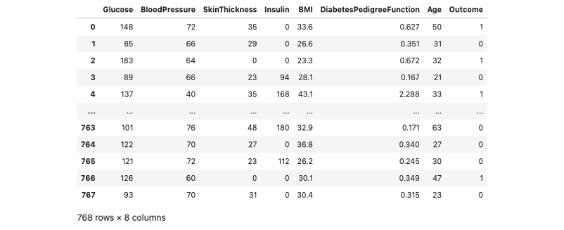
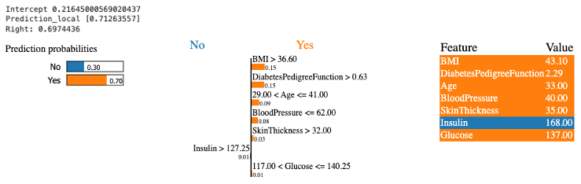
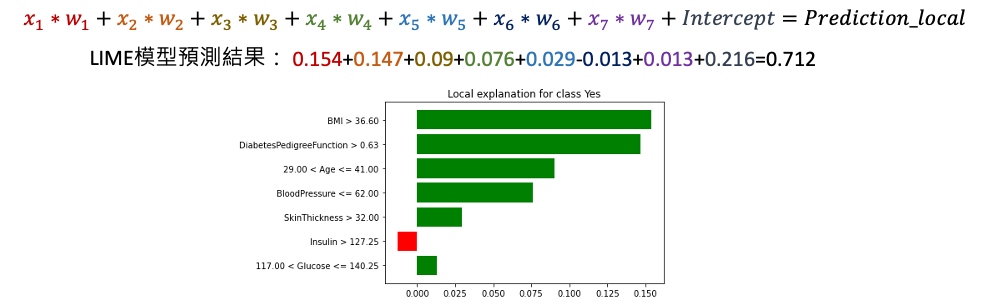

[Day 13] LIME實作：實戰演練LIME解釋方法
今天我們將深入探討 LIME 的實作細節，包括如何選擇解釋性模型和解釋特徵，以及如何選擇鄰域大小來生成解釋數據。
若想了解 LIME 的核心原理可以參考前一篇文章：[Day 12] LIME理論：如何用局部線性近似解釋黑箱模型
LIME 的優缺點
LIME 是一種機器學習可解釋的技術，它的基本原理是在解釋模型時，透過建立一個局部解釋性模型，來近似黑盒模型的預測結果。這讓我們能夠針對特定的輸入樣本，解釋模型是如何進行判斷和預測的。以下為各位統整 LIME 的優缺點：
-
LIME 的優點：
- 可以解釋任何複雜模型。
- 能夠針對某一筆資料進行解釋。
- 提供簡單容易理解的解釋方法(線性模型ex: Ridge Linear Regression)。
-
LIME 的缺點：
- 對於鄰域的定義仍然是一個未解決的問題（最好的方法是嘗試不同的核函數設置，並測試哪一個效果最好）。
- 資料的抽樣方法與數量無一定的標準，因此容易影響解釋結果。
- 簡單模型採用線性易忽略特徵之間的相關性，有時可能產生不合理的解釋結果。
- 輸入的資料若存在嚴重共線性問題，則會使迴歸估計不准確。
[實作] LIME 解釋分類模型
這裡我們會以一個糖尿病預測資料集訓練一個 XGBoost 分類器。接這透過 LIME LimeTabularExplainer 訓練一個簡單模型並對一筆資料進行解釋。首先我們先載入今天範例的資料集，該資料集可以從 Kaggle 資料科學平台取得。
載入資料集
import pandas as pd # 讀取資料集 df_train = pd.read_csv('./diabetes.csv')
讓我們來瞧瞧 df_train 裡面的內容。我們可以發現該資料集有總共有 768 筆數據，每一筆資料有八個欄位資訊，其中包含模型的輸入與輸出。

這個資料集來自美國國家糖尿病和消化和腎臟疾病研究所。其目標是根據診斷測量來預測病人是否患有糖尿病。資料集的變數如下：
- Glucose：口服葡萄糖耐量測試中2小時的血漿葡萄糖濃度，用於測試糖尿病的診斷。
- BloodPressure：舒張壓(mm Hg)，血壓中的一個參數，用於衡量心臟在收縮時的壓力。
- SkinThickness：三頭肌皮膚褶皺厚度(mm)，用於衡量皮膚的脂肪層厚度。
- Insulin：2小時血清胰島素(mu U/ml)，用於評估胰島素水平，對糖尿病的診斷非常重要。
- BMI：身體質量指數，表示體重和身高的比例，用於評估體重狀況。
- DiabetesPedigreeFunction：糖尿病家族遺傳函數，用於衡量患有糖尿病的家族遺傳風險。
- Age：病人的年齡。
- Outcome：病人是否患有糖尿病(作為模型輸出)，值為0表示沒有糖尿病，值為1表示患有糖尿病。
切割資料集
接下來從剛剛讀取進來的 df_train 資料集中，將所有的輸入特徵資料提取出來，作為模型的輸入 X。同時，我們從 df_train 中取得 Outcome 欄位的資料，作為模型的輸出 y，用來表示病人是否患有糖尿病。除此之外，我們也將所有輸入特徵的欄位名稱儲存到 x_feature_names 變數中，y_label_names 則是儲存輸出的標籤名稱，這兩個個變數將在後續 LIME 模型解釋的過程中使用。最後透過 train_test_split 方法切割訓練集與測試集。
from sklearn.model_selection import train_test_split x_feature_names = df_train.drop(['Outcome'], axis=1).columns y_label_names = ['No', 'Yes'] X = df_train.drop(['Outcome'], axis=1).values # 移除y並取得剩下欄位資料 y = df_train['Outcome'].values # 取得病人糖尿病結果作為y X_train, X_test, y_train, y_test = train_test_split(X, y, test_size=0.01, random_state=42, stratify=y)
訓練模型 (XGBoost 分類器)
以下使用 XGBoost 分類器（XGBClassifier）來建立一個模型，並使用訓練資料（X_train, y_train）來訓練這個模型。
from xgboost import XGBClassifier # 建立 XGBClassifier 模型 xgboostModel = XGBClassifier() # 使用訓練資料訓練模型 xgboostModel.fit(X_train, y_train)
LIME 解釋模型
再來是本文的重頭戲。首先大家可以在終端機輸入以下指令安裝 LIME 套件：
pip install lime
LimeTabularExplainer 用於解釋表格數據中的模型預測，根據訓練數據和模型預測結果生成解釋模型，並提供局部解釋結果。透過設置不同的參數，可以自定義解釋器的行為，以滿足不同的解釋需求。以下是常用的設定參數與說明：
- training_data：訓練集資料 X。
- mode：str，用於指定是分類還是迴歸模型，{"classification", "regression"}。
- feature_names：list of names (strings)，特徵名稱，對應於訓練數據中的列。
- categorical_features：list of indices (ints)，類別特徵的索引列表，這些特徵的值必須是整數(OrdinalEncoder前處理)。
- categorical_names：map from int to list of names，類別特徵的名稱映射，其中 categorical_names[i][j] 表示第 i 列中第 j 個值的名稱。
- verbose：bool，是否顯示LIME局部模型預測值。
- class_names：list of class names，類別名稱列表，按照分類器使用的順序排列。如果未提供，類別名稱將是 '0'、'1' 等。
- feature_selection：str，特徵選擇方法，預設值為auto，{'forward_selection', 'highest_weights', 'lasso_path', 'none', 'auto'}。詳細內容參考
- random_state: 亂數種子，確保每次執行結果都一樣。
import lime from lime import lime_tabular lime_explainer = lime_tabular.LimeTabularExplainer( training_data= X_train, feature_names= feature_names, mode='classification', class_names=y_label_names, verbose=True, feature_selection='lasso_path', feature_selection='none', random_state=44 )
我們剛剛已經建立了一個 LimeTabularExplainer 並且初始化解釋模型的設定後，接下來就可以試著丟一筆要被解釋的資料並透過 LIME 訓練一個簡單線性模型並解釋。解釋每一筆預測數據則是呼叫 explain_instance() 方法。以下是常用的設定參數與說明：
- data_row：一維numpy，對應於要解釋的一筆資料。也就是要進行解釋的特定數據樣本。
- predict_fn：已訓練的預測模型。對於分類器，這應該是一個函數，接受一個 numpy 數組作為輸入，並輸出預測機率。對於回歸模型，這個函數接受一個 numpy 數組並返回預測值。對於 ScikitClassifiers，這是 classifier.predict_proba()。對於 ScikitRegressors，這是 regressor.predict()。
- top_labels：預設為None，適用於分類模型可以輸入要被解釋的前k個預測標籤的模型解釋。
- num_features：解釋的特徵數量。這個參數限制了解釋結果中所顯示的特徵數量。預設為10。
- num_samples：用於學習線性模型的鄰域大小。該參數控制了生成解釋所需的樣本數量。預設為5000。
這裡需要注意的是，LIME 在訓練一個簡單的線性模型時，使用的是 Ridge 線性模型。在訓練過程中，會根據使用者呼叫 explain_instance() 方法時設定的 num_features 參數，從訓練集中挑選出合適的特徵進行訓練。而模型如何選擇特徵，則取決於建立 LimeTabularExplainer 時所設定的 forward_selection 參數。若想觀察所有特徵的解釋性，可以將該參數設置為 'none'，這樣模型就會考慮所有輸入 X 的特徵。以下程式碼從測試集中拿第六筆資料進行解釋，並且選擇要解釋的特徵設定為七個，代表 LIME 會針對所有特徵進行解釋。
lime_exp = lime_explainer.explain_instance( data_row=X_test[5], predict_fn=xgboostModel.predict_proba, num_features=7)
最後呼叫 show_in_notebook() 即可觀察 LIME 如何對該筆資料進行解釋。
lime_exp.show_in_notebook(show_table=True, show_all = True)
-
Intercept 是生成的線性模型的截距項。在 LIME 中，為了解釋模型的預測結果，會使用一個線性模型來近似原始黑盒模型。Intercept 是這個線性模型中的截距項，表示在沒有任何特徵貢獻的情況下，模型預測的基本值。
-
Prediction_local 是從線性模型中預測的局部預測結果。在 LIME 中，針對特定的一筆資料樣本，會生成一個局部的線性模型，用來解釋該樣本的預測結果。Prediction_local 是這個局部線性模型對於該樣本的預測值。
-
Right 是從被解釋的分類器（XGBoost）中得到的預測值。在 LIME 中，會使用一個弱模型（分類器或迴歸器）來進行解釋，該弱模型是用來模擬原始黑盒模型的預測行為。

我們可以從上面的結果分析這筆資料的預測結果。首先，在沒有加入任何特徵時，線性模型預測患有糖尿病的機率為 0.21，這是截距項的影響。接著，我們觀察每個特徵的影響。以 BMI 為例該項特徵會造成糖尿病正面的影響是因為輸入的數值大於 36.6 這個閾值，將其輸入值 43 乘以 LIME 線性模型的 x1 係數，得到 0.15。這表示 BMI 特徵的加入會增加預測患有糖尿病的機率約 0.15。依此類推，每個特徵都加入後，最後加總起來得到這筆資料的預測結果為 0.712。在這個二元分類的範例中，這表示有相當高的機率被預測為患有糖尿病。而 XGBoost 模型預測該筆資料的機率為 0.69。

SP-LIME 總體貢獻
雖然單筆預測的解釋可以部分地讓使用者了解模型的決策方式，但這並不能完整地反映模型整體的性能和可靠性。若要全面的理解整個模型可能需要看很多筆資料的解釋。但是要看幾筆資料才足夠多呢？在原始論文中提供了一個選擇資料筆數的演算法稱作 Submodular pick (SP)。
小結
LIME 提供了一種有效的方法，能夠針對黑盒模型進行解釋，幫助我們更理解模型推論的規則。今天透過 LIME 解釋模型的特徵重要性，我們可以發現哪些特徵對於模型的預測結果影響較大，進而幫助我們優化模型，提高其性能和準確性。此外在某些應用中，模型的誤判可能導致嚴重的後果。透過 LIME 可以幫助我們找出模型預測的薄弱環節，並進行風險評估和風險管理。所以模型的解釋性至關重要，因為模型的預測可能直接影響最終決策。